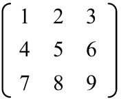
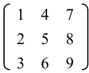

首页 > 编程笔记
Python实现矩阵转置详解
解决矩阵转置问题，首先应该清楚什么是矩阵的转置。
矩阵转置在数学上的定义为：
则经过转置，即将矩阵的第i行变成了现在的第i列，原来的矩阵 A 变为如下的矩阵 B：
以问题分析中提到的 A 矩阵为例，要实现 A 的转置，首先应将其存放在一个二维数组 n 中，该二维数组中的元素及其内容如下表所示：
将 A 转置后，二维数组 n 中的元素及其内容如下表所示：
观察表 2 可知，转置后矩阵主对角线上的数组元素 n[0][0]、n[1][1]、n[2][2] 的值并没有发生变化，只是位于对角线右上方的三个元素与位于对角线左下方的三个元素的值进行了交换。具体为 n[0][1] 与 n[1][0] 进行了交换，n[0][2] 与 n[2][0] 进行了交换，n[1][2] 与 n[2][1] 进行了交换。
根据这个发现就可以来设计我们的算法，在对一个 3×3 阶矩阵转置时，只需将主对角线右上方的数组元素 n[0][1]、n[0][2]、n[1][2] 分别与主对角线左下方的数组元素 n[1][0]、n[2][0]、n[2][1] 的值通过一个临时变量进行交换即可，总共只需要进行三次交换就可以实现矩阵的转置。
编写程序如下：
矩阵转置在数学上的定义为：
设 A 为 m×n 阶矩阵（即 m 行 n 列的矩阵），其第 i 行第 j 列的元素是 a(i, j)，即 A=a(i, j)m×n。定义 A 的转置为这样一个 n×m 阶矩阵 B，满足 B=a(j,i)n×m，即 b(i, j)=a(j, i)（B 的第 i 行第 j 列元素是 A 的第 j 行第 i 列元素）。
假设有如下的矩阵 A：

则经过转置，即将矩阵的第i行变成了现在的第i列，原来的矩阵 A 变为如下的矩阵 B：

算法设计
解决矩阵问题时通常都是先将矩阵存放在一个二维数组中，而当矩阵发生变化时，二维数组中对应的元素也会发生变化。以问题分析中提到的 A 矩阵为例，要实现 A 的转置，首先应将其存放在一个二维数组 n 中，该二维数组中的元素及其内容如下表所示：
|
n[0][0] 1 |
n[0][1] 2 |
n[0][2] 3 |
|
n[1][0] 4 |
n[1][1] 5 |
n[1][2] 6 |
|
n[2][0] 7 |
n[2][1] 8 |
n[2][2] 9 |
将 A 转置后，二维数组 n 中的元素及其内容如下表所示：
|
n[0][0] 1 |
n[0][1] 4 |
n[0][2] 7 |
|
n[1][0] 2 |
n[1][1] 5 |
n[1][2] 8 |
|
n[2][0] 3 |
n[2][1] 6 |
n[2][2] 9 |
观察表 2 可知，转置后矩阵主对角线上的数组元素 n[0][0]、n[1][1]、n[2][2] 的值并没有发生变化，只是位于对角线右上方的三个元素与位于对角线左下方的三个元素的值进行了交换。具体为 n[0][1] 与 n[1][0] 进行了交换，n[0][2] 与 n[2][0] 进行了交换，n[1][2] 与 n[2][1] 进行了交换。
根据这个发现就可以来设计我们的算法，在对一个 3×3 阶矩阵转置时，只需将主对角线右上方的数组元素 n[0][1]、n[0][2]、n[1][2] 分别与主对角线左下方的数组元素 n[1][0]、n[2][0]、n[2][1] 的值通过一个临时变量进行交换即可，总共只需要进行三次交换就可以实现矩阵的转置。
实现矩阵转置
矩阵问题和循环结构是分不开的，要想访问二维数组中的每个元素，就需要使用一个双重循环。这里我们可以使用一个双重的for循环在循环体中完成数组元素交换，即矩阵转置的任务。编写程序如下：
if __name__ == "__main__":
n = [[1, 2, 3], [4, 5, 6], [7, 8, 9]]
print("原始矩阵：")
for i in range(3):
for j in range(3):
print("%d " %(n[i][j]), end=" ") # 输出原始矩阵
print()
for i in range(3):
for j in range(3):
#将主对角线右上方的数组元素与主对角线左下方的数组元素进行单方向交换
if j > i:
temp = n[i][j]
n[i][j] = n[j][i]
n[j][i] = temp
print("转置矩阵：")
for i in range(3):
for j in range(3):
print("%d " %(n[i][j]), end=" ")
print()
运行结果为：
原始矩阵：
1 2 3
4 5 6
7 8 9
转置矩阵：
1 4 7
2 5 8
3 6 9
关注公众号「站长严长生」，在手机上阅读所有教程，随时随地都能学习。内含一款搜索神器，免费下载全网书籍和视频。

微信扫码关注公众号